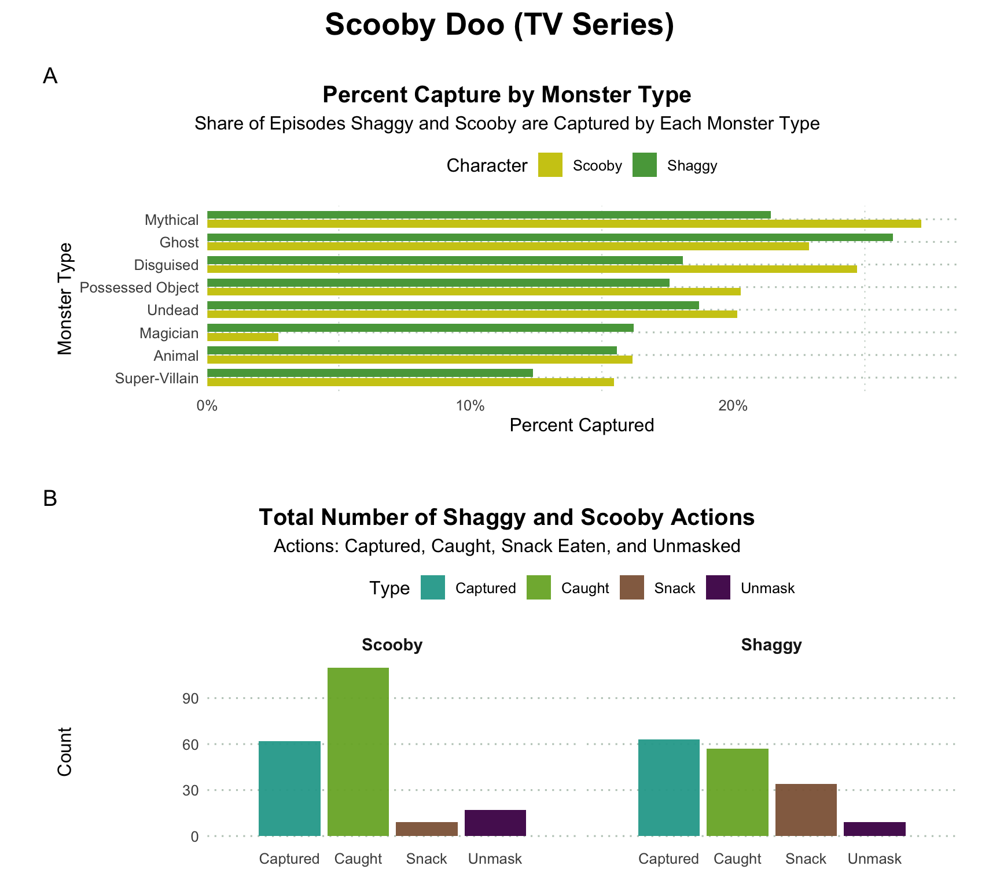
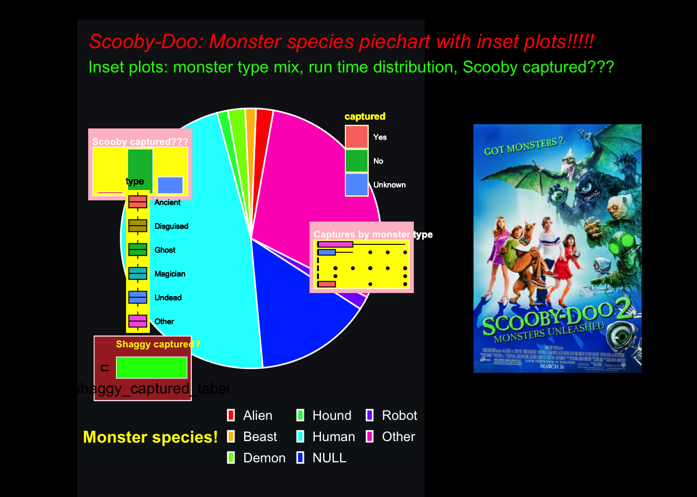

library(tidyverse)
library(here)
library(ggplot2)
library(tidytuesdayR) # data
library(ghibli) # color palette I often use
library(lubridate)
library(dplyr)
library(tidyr)
library(grid) # for ggplot graphical object (Grob) insets
library(ggpp) # ggplot2 extension
library(gtable) # arranges grobs
library(stringr) # character strings
library(gtable) # arranges grobs
library(scales) # map data to aesthetics
library(forcats) # lumping, reorder things, modify factor levels
library(ggrepel) # for repelling labels
library(magick) # adding images
library(cowplot) # also putting plot together
library(patchwork) # putting plots togetherGoodplot/Badplot
Introduction
Goodplot Badplot Competition (the winner gets a prize)!
I want to start with my Goodplot first so that you can see the funny and enjoyable observations that the TidyTuesday Scooby Doo data encompasses. And to surprise you with a horribly terribly awfully Badplot…
Load Libraries
Read Data
tt<- tt_load("2021-07-13") # loads Tidy Tuesday Scooby Doo data
scoobydoo <- tt$scoobydoo %>% as_tibble() # get scooby doo data frameScooby Doo Data
head(scoobydoo)# A tibble: 6 × 75
index series_name network season title imdb engagement date_aired run_time
<dbl> <chr> <chr> <chr> <chr> <chr> <chr> <date> <dbl>
1 1 Scooby Doo, W… CBS 1 What… 8.1 556 1969-09-13 21
2 2 Scooby Doo, W… CBS 1 A Cl… 8.1 479 1969-09-20 22
3 3 Scooby Doo, W… CBS 1 Hass… 8 455 1969-09-27 21
4 4 Scooby Doo, W… CBS 1 Mine… 7.8 426 1969-10-04 21
5 5 Scooby Doo, W… CBS 1 Deco… 7.5 391 1969-10-11 21
6 6 Scooby Doo, W… CBS 1 What… 8.4 384 1969-10-18 21
# ℹ 66 more variables: format <chr>, monster_name <chr>, monster_gender <chr>,
# monster_type <chr>, monster_subtype <chr>, monster_species <chr>,
# monster_real <chr>, monster_amount <dbl>, caught_fred <chr>,
# caught_daphnie <chr>, caught_velma <chr>, caught_shaggy <chr>,
# caught_scooby <chr>, captured_fred <chr>, captured_daphnie <chr>,
# captured_velma <chr>, captured_shaggy <chr>, captured_scooby <chr>,
# unmask_fred <chr>, unmask_daphnie <chr>, unmask_velma <chr>, …Good Plot
Clean the Data: First Plot
# CLEAN THE DATA
# Clean up mixed TRUE/Yes/1 strings as TRUE
# Clean monster types
scoobydoogood_clean <- scoobydoo %>%
separate_rows(monster_type, sep = ",") %>% # split "TypeA,TypeB" into rows
mutate(monster_type = str_trim(monster_type), # removes whitespace from start and end of string
monster_type = na_if(monster_type, "NULL"), # convert NULLs to NA
monster_type = fct_lump_n(monster_type, n = 8, other_level = "Other")) %>% # order factors to top 8 types + "Other"
mutate(captured_scooby = str_to_lower(as.character(captured_scooby)) %in% c("true","yes","1"), # clean up trues in column
captured_shaggy = str_to_lower(as.character(captured_shaggy)) %in% c("true","yes","1")) %>%
filter(!is.na(monster_type), monster_type != "Other") # filter monster type
# Calculate % captured by monster type for Scooby and Shaggy
captured_data <- scoobydoogood_clean %>%
summarise(n = n(),
scooby = mean(captured_scooby, na.rm = TRUE), # get mean
shaggy = mean(captured_shaggy, na.rm = TRUE), .by = monster_type) %>%
pivot_longer(cols = c(scooby, shaggy), # pivot longer for plotting two bars per type
names_to = "character", values_to = "pct") %>%
mutate(character = recode(character, # rename the characters
scooby = "Scooby",
shaggy = "Shaggy"),
monster_type = fct_reorder(monster_type, pct, .fun = max)) # reorder by higher rateMake the First Plot
# FIRST PLOT: percent captured by monster type (Scooby vs Shaggy)
captured_plot<-ggplot(captured_data,
aes(x = pct, y = monster_type, fill = character)) + # plot by percentage and monster type between Shaggy and Scooby
geom_col(position = position_dodge(width = 0.8), width = 0.7) + # geom_col to make heights of bars represent % values
scale_x_continuous(labels = label_percent(accuracy = 1), expand = expansion(mult = c(0, .05))) + # use scales to map percents to aesthetics
scale_fill_ghibli_d("MarnieMedium2", direction = -1) + # nice colors from the ghibli package
labs(title = "Percent Capture by Monster Type",
subtitle = "Share of Episodes Shaggy and Scooby are Captured by Each Monster Type",
x = "Percent Captured", y = "Monster Type",
fill = "Character") +
theme_minimal(base_size = 12) +
theme(plot.title = element_text(hjust = 0.5, face = "bold", size = 15),
plot.title.position = "plot",
plot.subtitle = element_text(size = 12, hjust = 0.5),
panel.grid.major.x = element_blank(),
panel.grid.minor.y = element_blank(),
strip.text = element_text(face = "bold", size = 10),
legend.position = "top",
panel.grid = element_line(color = "#bccbc0", linetype = 3),
panel.spacing.y = unit(10, "pt"), # space between facet rows
plot.margin = margin(10, 20, 10, 20)) # space around plot
captured_plotClean the Data: Second Plot
# CLEAN THE DATA
# Compute action counts just for Scooby & Shaggy
action_data <- scoobydoo %>%
filter(format == "TV Series") %>% # filter only TV series rows
select(index, matches("^(caught|captured|unmask|snack)_(scooby|shaggy)$")) %>% # keep index and only the four actions for the two characters, must match the regex ah!!!
pivot_longer(-index, names_to = "name", values_to = "value") %>% # long format with one row per index and character action
separate(name, into = c("type", "char"), sep = "_", remove = TRUE, extra = "merge") %>% # i.e remove the "_" from "captured_scooby"
filter(str_to_lower(as.character(value)) %in% c("true","yes","1")) %>% # stringr to keep only rows with the action, clean up the TRUE/Yes/1 ast TRUE
mutate(char = str_to_title(char),
type = str_to_title(type)) %>% # use stringr to mutate the character names into title capitals
count(type, char, name = "n") # count rows of type and character (n = frequency)
# Palette with Scooby Doo colors
scooby_palette <- c(
Captured = "#26A69A",
Caught = "#79af30",
Snack = "#8e6345",
Unmask = "#4b0055")Make the Second Plot
# SECOND PLOT: Total number of actions done by Shaggy and Scooby
action_plot <- action_data %>%
ggplot(aes(x = type, y = n, fill = type)) + # action, counts, and characters
geom_col(width = 0.9, alpha = 0.95) + # geom_col to make heights of bars represent % values
facet_wrap(~ char, ncol = 2) +# one panel per character in two columns
scale_fill_manual(values = scooby_palette, name = "Type",
labels = c(captured = "Captured", caught = "Caught",
snack = "Snack", unmask = "Unmask")) + # Scooby Doo colors!!!
scale_x_discrete(expand = c(.3, .3), # clean up the x-axis and relabel
labels = c("captured"="Captured","caught"="Caught",
"snack"="Snack","unmask"="Unmask")) +
labs(title = "Total Number of Shaggy and Scooby Actions",
subtitle = "Actions: Captured, Caught, Snack Eaten, and Unmasked",
x = NULL, y = "Count", fill = "Type") + # removed x-axis title
theme_minimal(base_size = 12) +
theme(plot.title.position = "plot", # same theme as first plot
plot.subtitle = element_text(size = 12, hjust = 0.5),
plot.title = element_text(hjust = 0.5, face = "bold", size = 15),
legend.position = "top",
panel.grid.major.x = element_blank(),
panel.grid.minor.y = element_blank(),
strip.text = element_text(face = "bold", size = 11),
panel.grid = element_line(color = "#bccbc0", linetype = 3))
action_plotFinal Goodplot
Stack the Plots
# Stack each plot into one
scoobydoo_goodplot<-(captured_plot + plot_spacer() + action_plot) + # this uses patchwork package and had to add spacer
plot_layout(ncol = 1, heights = c(1, 0.06, 1)) + # adds a gap between plots
plot_annotation(title = "Scooby Doo (TV Series)", # adds one big title to both
tag_levels = 'A', # labels the plots A and B
theme = theme(plot.title = element_text(size = 20, face = "bold", hjust = 0.5),
plot.tag.position = "plot",
plot.margin = margin(8, 8, 8, 8)))
scoobydoo_goodplot

Figure 1 shows the percentage of how many times Shaggy and Scooby were captured by each monster type (A) and the total number of times they were captured, were caught, ate a Scooby snack, and unmasked someone throughout the whole TV series (B).
Good Plot Discussion
Why is this a Good Plot?:
- This plot’s theme is simple and visually easy to follow.
- This plot answers a clear and straightforward question (Healy). It focuses just on Shaggy and Scooby and how many times they did a specific action throughout the whole TV series.
- I used geom_col to represent the bars as magnitude so that people read it more as position/length rather than angle/area (Wilke).
- Faceting the bottom plot by character makes it easier to compare between Shaggy and Scooby with consistent scales (Healy).
- The titles and labels makes the data speak well and they are all title case (Healy).
Bad Plot
Clean the Data
# CLEAN THE DATA
# Number of gang members captured in each row (episode/monster)
captured_columns<-c("captured_scooby", "captured_shaggy", "captured_fred",
"captured_daphnie", "captured_velma")
scoobydoobad_clean <- scoobydoo %>% # Make a clean, one species per row
mutate(species_one = ifelse(is.na(monster_species), "Unknown", monster_species), # replace NA
species_one = sub(",.*$", "", species_one), # take text up to first comma using regex
species_one = str_trim(species_one), # trim spaces in data
captured_count = rowSums(across(all_of(captured_columns),
~ as.integer(as.character(.)
%in% c("TRUE","True","true","Yes","yes","1"))),
na.rm = TRUE)) # count all the captures in the columns Clean the Data: Base Pie Chart
# Stuff to do for a PIE CHART
# Build pie counts with a small number of wedges (lump, count, drop unused levels)
pie_data <- scoobydoobad_clean %>%
mutate(species_one = fct_lump_n(species_one, n = 6, other_level = "Other")) %>% # lump
count(species_one, name = "n") %>% # count after lumping
mutate(pct = n / sum(n)) %>% # turn it into a percent
arrange(desc(n)) %>%
mutate(species_one = fct_drop(species_one)) # drop unused levels
# 3 wedges for the inset plots: the 3 most common species
species_top3<-head(pie_data$species_one, 3)
# compute where each wedge sits so we can drop insets inside it
pie_position <- pie_data %>%
mutate(end = cumsum(pct), #geometry of slices
start = lag(end, default = 0),
mid = (start + end) / 2, # middle of the slice in [0,1]
theta = 2*pi*(0.25 - mid)) # 0 at top clockwise
# have to make this function to normalized parent coords (npc) for a given species and radius r of piechart
npc_for <- function(species, r = 0.70)
{row <- pie_position[match(species, pie_position$species_one), ]
tibble(x = 0.5 + r * cos(row$theta),
y = 0.5 + r * sin(row$theta))}
# Keep only the present levels for legend/breaks
levels_keep <- levels(pie_data$species_one) # now just k (+ "Other")
# loud non-color blind friendly palette
# palette for exactly pie_data levels
pie_palette <- grDevices::rainbow(length(levels_keep), s = 1, v = 1)
pie_palette <- stats::setNames(pie_palette, levels_keep) # name colors so mapping is explicit
# where to put each small plot on the piechart
plot_A <- npc_for(species_top3[1], r = 0.60) # smaller closer to center
plot_B <- npc_for(species_top3[2], r = 0.70) # mid radius
plot_C <- npc_for(species_top3[3], r = 0.62) # closer to centerMaking the Plots: Base Pie & Small Insets
# Three SMALL PLOTS (one per chosen wedge)
# edited the data and piped straight to their respective plots, made sense to me that way
# Theme for most of the small plots:
mini_theme <- theme_void(base_size = 7) +
theme(legend.position = "none",
plot.background = element_rect(fill = "pink", color = "white", 0.6),
panel.border = element_rect(fill = NA, color = "white", linewidth = 0.5),
panel.background = element_rect(fill = "yellow", color = NA),
plot.title = element_text(color = "white", hjust = 0, face = "bold", size = 7),
plot.margin = margin(3, 3, 3, 3))
# Plot A: Boxplot- Number captured by monster_type (top 5 types for readability)
monster_box <- scoobydoobad_clean %>%
filter(species_one == species_top3[1]) %>%
mutate(monster_type = fct_lump_n(monster_type, n = 5, other_level = "Other")) %>%
ggplot(aes(monster_type, captured_count, fill = monster_type)) +
geom_boxplot(width = 0.7, outlier.size = 0.6, colour = "black") +
coord_flip() +
labs(title = "Captures by monster type") +
mini_theme
# Plot B: Bar Plot- Captured Shaggy
shaggy_bar <- scoobydoobad_clean %>%
filter(species_one == species_top3[2]) %>%
mutate(shaggy_captured_label = case_when(
as.character(captured_shaggy) %in% c("TRUE","True","true","Yes","yes","1") ~ "Yes", # fixes the label, had to look this up b/c did it before lecture 8
as.character(captured_shaggy) %in% c("FALSE","False","false","No","no","0") ~ "No", TRUE ~ "Unknown"),
shaggy_captured_label = factor(shaggy_captured_label, levels = c("Yes","No","Unknown"))) %>%
count(shaggy_captured_label, name = "n") %>%
ggplot(aes(shaggy_captured_label, n, fill = shaggy_captured_label)) +
geom_col(width = 0.85, colour = "white") +
labs(title = "Shaggy captured?") +
theme(legend.position = "left", # just the worst theme colors I could think of that included Shaggys signature colors lol
plot.background = element_rect(fill = "brown", color = "white", 0.6),
panel.border = element_rect(fill = NA, color = "white", linewidth = 0.5),
panel.background = element_rect(fill = "green", color = NA),
plot.title = element_text(color = "yellow", hjust = 0, face = "bold", size = 7),
plot.margin = margin(3, 3, 3, 3))
# Plot C: Bar Plot- Captured Scooby
scooby_bar <- scoobydoobad_clean %>%
filter(species_one == species_top3[3]) %>%
mutate(captured_label = case_when(
as.character(captured_scooby) %in% c("TRUE","True","true","Yes","yes","1") ~ "Yes", # fixes the label
as.character(captured_scooby) %in% c("FALSE","False","false","No","no","0") ~ "No",
TRUE ~ "Unknown")) %>%
count(captured_label, name = "n") %>% # count the number of captures
mutate(captured_label = fct_relevel(captured_label, "Yes","No","Unknown")) %>% # reorder captured label
ggplot(aes(captured_label, n, fill = captured_label)) +
geom_col(width = 0.85, colour = "white") + # geom_col makes heights of bars represent % values
labs(title = "Scooby captured???") +
mini_theme
# Legends: make legend versions of small plots
# they were being funky with less code so I had to do this
monster_box_legend <- monster_box +
theme(legend.position = "right") + # move the position of the legends
guides(fill = guide_legend(title = "type", ncol = 1))
scooby_bar_legend<-scooby_bar +
theme(legend.position = "right", legend.text = element_text(color = "white"),
legend.title = element_text(color = "yellow", face = "bold")) +
guides(fill = guide_legend(title = "captured", ncol = 1))
legend_type <- gtable_filter(ggplotGrob(monster_box_legend), "guide-box") # uses gtable and grobs
legend_captured <- gtable_filter(ggplotGrob(scooby_bar_legend), "guide-box")
# PIE CHART
# Base Plot: Piechart- Monster Species
monster_pie <- ggplot(pie_data, aes(x = 1, y = pct, fill = species_one)) +
geom_col(color = "white", width = 1) +
coord_polar(theta = "y", start = pi/18, clip = "off") + # <-- small rotation # clip=off allows inset overlap
scale_fill_manual(values = pie_palette, breaks = levels_keep, # only specific levels stay in legend, legend restricted to these
labels = scales::label_wrap(16),
name = "Monster species!") +
guides(fill = guide_legend(ncol = 3)) + # fewer rows, easier to read
labs(title = "Scooby-Doo: Monster species piechart with inset plots!!!!!",
subtitle = "Inset plots: monster type mix, run time distribution, Scooby captured???") +
theme_void(base_size = 12) +
theme(plot.title = element_text(color = "red", face = "italic", hjust = 0),
aspect.ratio = 1, # square panel → larger circle
plot.margin = margin(4, 8, 24, 8), # tighter margins
legend.position = "bottom",
legend.box = "vertical",
legend.key.size = grid::unit(6, "pt"),
legend.text = element_text(color = "white"),
legend.title = element_text(color = "yellow", face = "bold"),
legend.background = element_rect(fill = scales::alpha("#121418", 0.9), colour = NA),
plot.title.position = "plot",
plot.subtitle = element_text(color = "green", hjust = 0),
plot.background = element_rect(fill = "#121418", color = NA),
panel.background = element_rect(fill = "#121418", color = NA))Put the Plots Together
# LAYERING THE PLOTS
# put each small plot inside each wedge of the base pie
monster_pie_layers<-monster_pie + # in-wedge mini plots (smaller)
geom_plot_npc(aes(npcx = plot_A$x, npcy = plot_A$y, # x and y position in normalized parent coords
label = list(monster_box)), # the ggplot object to draw as an inset
vp.width = 0.32, vp.height = 0.22) + # inset width and height
geom_plot_npc(aes(npcx = plot_B$x, npcy = plot_B$y, # do this for each small plot
label = list(shaggy_bar)),
vp.width = 0.30, vp.height = 0.20) +
geom_plot_npc(aes(npcx = plot_C$x, npcy = plot_C$y,
label = list(scooby_bar)),
vp.width = 0.32, vp.height = 0.22) +
# side legends more off to the sides
geom_grob_npc(aes(npcx = 0.1, npcy = 0.55, label = list(legend_type))) + # left and below scooby plot
geom_grob_npc(aes(npcx = 0.97, npcy = 0.86, label = list(legend_captured))) # right and above monster plot
# adding the image (couldn't use magick :/)
url<-"https://upload.wikimedia.org/wikipedia/en/b/be/Scooby-Doo_2_-_Monsters_Unleashed_poster.png" # the image was weird so I had to look up this way
tmp <- tempfile(fileext = ".png"); download.file(url, tmp, mode = "wb")
black_background<-rectGrob(gp = gpar(fill = "black", col = NA)) # had to define the background because it wasn't showing up everywhere
scoobydoo_badplot<- ggdraw() + # final touches to adding the image and all black background
draw_grob(black_background, x = 0, y = 0, width = 2, height = 2) + # full black background
draw_image(tmp, x = 0.3, y = 0.5, scale = 0.5, hjust = 0, vjust = 0.5) + # on the right side
draw_plot(monster_pie_layers, x = 0, y = 0, width = 0.72, height = 0.96) # pie, insets, side legends on the left
scoobydoo_badplot

Figure 2 shows the relative counts of monster species throughout the show (Pie Chart). Two bar plots each show the amount of times Shaggy and Scooby were captured. There is also a box plot of monster types layered on top of the pie chart as well.
Bad Plot Discussion
Why is this a Bad Plot?:
- This plot is bad because it is just downright ugly!
- black background: in any publication, a background like this would cost the journal a lot of money and is just not visually easy to view since the text is so contrasting (non-data ink, Healy).
- color scheme: I specifically chose color palettes that are absolutely NOT color-blind friendly with high hues and non-simple palettes (Wilke).
- I created a pie chart which uses angles/area which is hard to quantitatively compare (Wilke).
- Way too many unnecessary aesthetics are used with multiple plots and legends all overlapping and a photo that competes for attention (Wilke).
Extra
Scooby Doo 2: Monster’s Unleashed is my favorite movie of all time!

Assignment
Instructions
Due October 21, 2025
Homework:
Your homework is to create two versions of similar plots, using any dataset you choose. You must create the plots using ggplot2, post-processing with Adobe Illustrator or similar is not allowed. This homework is a contest, and the winner will win a prize to be disclosed.
Please submit your homework by posting a Quarto document containing the plots, the code you used to create them, and your discussion of the plot within the Quarto doc to your GitHub folder. Create an independent folder for your goodplot-badplot. Follow all best practices for file structure that we already learned in class. Your document MUST be rendered.
The first plot should be as bad as possible. Based on your reading from Claus Wilke’s and Healy’s textbook describe the many ways that a plot can become misleading, difficult to interpret, or just plain ugly, and you should use all of the tools that you can. Please try to make me cry, a person who cares a great deal about high-quality data visualization.
You should explain in text all of the ways in which the bad plot is bad. Bullet points are fine but clearly articulate each principle of data visualization that you have broken.
The second plot should be based on the same or similar data to the first plot, but it should be good. Write briefly about why this is a successful plot.
Badplot rules:
- All plots must be made in ggplot2, with code visible in the Quarto document.
- The data must be visible.
- The good plot and the bad plot should be based on the same, or similar, data.
- I will post the results on Social Media. Please notify me if you would prefer not to have your plots posted publicly. That is fine, but I need to know. The community waits for this every year and they love it.
Inspiration for a great place to get data for this assignment
This assignment is 20 points:
5 points - follow best practices for code/file organization
5 points - creativity for good plot
5 points - creativity for bad plot
5 points - explanation of why plots either do (good plot) or don’t (bad plot) follow best practices for data visualization
Extra To-Do:
# Empty your environment before you start working
# Restart R
# .rs.restartR()
# remove whole list in enviroment
# rm(list = ls())